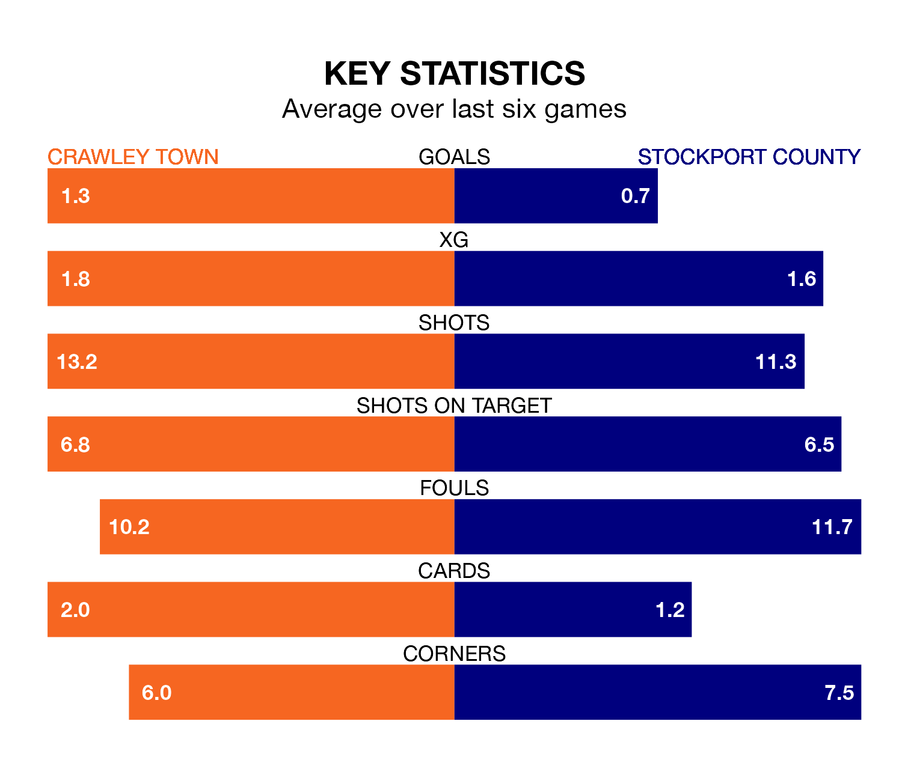

Stockport County are strong favourites to take all three points despite Crawley Town's home advantage in Monday's late match at the Broadfield Stadium.
*Betting Company* are offering odds of 1.83 on Stockport sealing the win, with the visitors sitting second in EFL League Two table.
Crawley, who are ninth in the league and 12 points behind the Hatters, are priced at 4.2 to win. A draw is set at 3.6.
With 69 goals in 36 games so far this season, Stockport are the league's third-highest scorers with 1.9 goals per game. And they are conceding fewer than average, letting in 39 goals at a rate of 1.1 per game.
Crawley, meanwhile, are average scorers, with 1.5 goals per game. They have conceded 1.4 goals per game.
In Ben Hinchiffe, County can rely on one of the league's safest pair of hands. He has kept 13 clean sheets in his 36 appearances this season, and only one other 'keeper – AFC Wimbledon's Alex Bass – has been able to prevent the opposition scoring on more occasions in EFL League Two.
In Town's net, Corey Addai has six clean sheets in 29 games. He has conceded a goal every 71 minutes, 20% more often than the 88 minutes between goals for Hinchiffe.
The Red Devils are in fantastic form in EFL League Two, with five wins and one loss from their last six games.
With a win and three draws over that period, the Hatters' form is much worse – they have taken six points from 18, compared to the hosts' 15.
In the last three years, Crawley and Stockport have played each other on three occasions. They won one each, and they drew once.
Their last meeting was on September 2, when they played out a 3-3 draw.
Crawley's last match was on Tuesday, a 2-1 win against Notts County, with Ade Adeyemo and Klaidi Lolos getting the goals for the Red Devils.
Stockport drew 2-2 with Salford City last time out, on Thursday, with Ibou Touray and Isaac Olaofe on the scoresheet.
Updated: 15:10 (UTC), 15/03/24